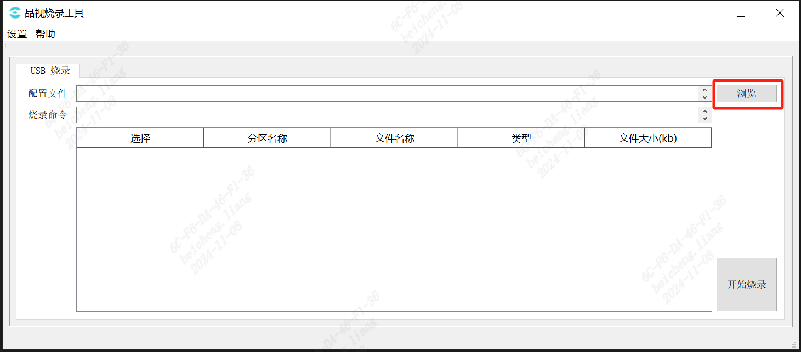
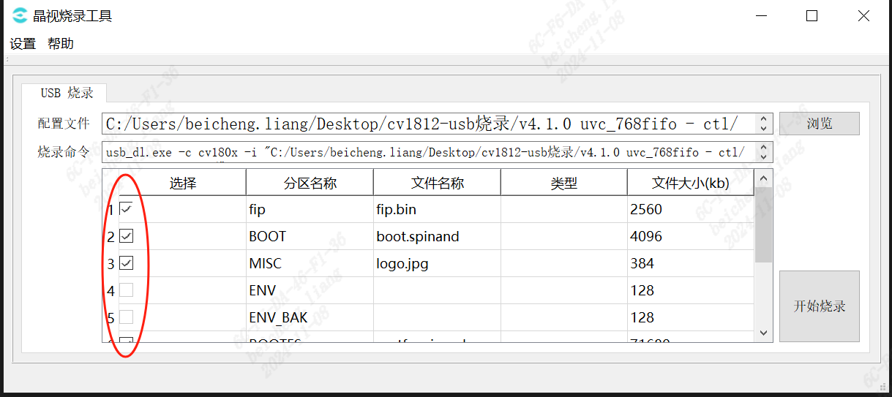
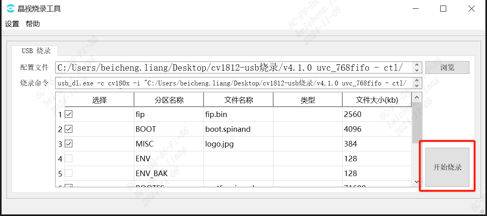
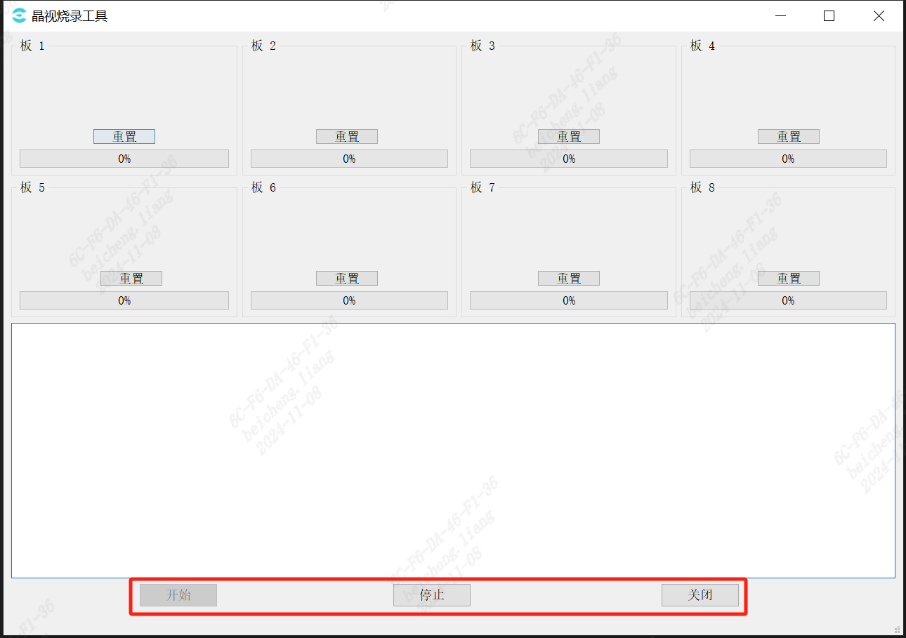

3.4. cviDownloadTool Tools¶
3.4.1. cviDownloadToolToolsIntroduction¶
cviDownloadToolTools can Burning Tool， Support Burning， SupportU-BootBurning（needDevice Support） CanSupport8 Device Burning。
Note
ThroughUSB Burning Need to followingCondition:
PC USBInterfaceand ofUSB2.0
must System ，Canon or System
withonCondition must ， USBBurningFlow
3.4.2. cviDownloadTool Use ¶
3.4.2.1. Burning Tool Operation Flow¶
Steps1.1
EnableBurning Tool， to 。

Figure 3.4 Burning Tool ¶
Steps1.2
Click Settings->Language Language Selection。

Figure 3.5 Burning ToolLanguage Selection¶
Steps1.3
ConfigurationBurning Tool
UserinBurningbeforeof Steps Enable Settings ， Burningofneed Configuration。 EnableBurning Tool on ofMenu ， Select Settings->Option，ConfigurationBurning needof Configuration 。

Figure 3.6 Settingsbutton¶

Figure 3.7 Settings ¶
SettingsOption
- BurningMethod:
UARTBurning： UseUART Burning。
USBBurning： UseUSB Burning。
UbootBurning: If ，Use ofU-Boot Burning， ThroughUSB LoadImageFileofU-Boot Burning。
Mode: If ，inBurning Data and 。
RawFileBurning: IfInputofImageFilenot File ，need 。
SNInformation: Burning Readsn ，andinBurning to in。
gptPartitionBurning: Option，Burning IncludegptPartition。
Type: needBurningDevice of Type， Image offipFileinInclude ， Usefipinof 。
vendorPartitionInformation: InputValueisPartitionunder ，If Value ，Burning Read ofvendorPartitionValueand to in。
Unpack Options:
Use DefinitionUnpackTools: ， can DefinitionUnpackTools。
UnpackTools: Select DefinitionofUnpackTools， Tools mustisexeFile， CanThroughCommand LineExecutemethod Unpack。
Unpack Parameters: UnpackToolsofCommand Line ，Use[IMAGE]and[DESTDIR] isCommand LineinofImagePathandPurposePath，If -unpack [IMAGE] [DESTDIR]。
File : Image ArchiveofFile after 。
BurningFileSelect： in DefinitionPartition Tableonof FilenotNeed to Burning。
Burning : in after， Burning UseofCommand Line 。
Burning: IfneedBurningof Need to underBurning BurningMode， need Option。
Note
not Deviceof Hardware Environment Support Option ，Do not Option， can SuccessBurning。
Steps1.4
Click button， toNeed to BurningofFileSystemConfigurationxmlFile，orImageFileof 。
{kind=link}

Figure 3.8 Click button¶
Note
IfSelectof ，inExtract before under the directory incviBurnUnpackDirFile ，If in will Delete，withDelete ofImageFile！
File fromImageinExtract of File，Pleasein BurningFirmwareFileof inPath in File 。
PleaseEnsureImage ArchiveFileofContent xmloryamlFile， beforeTools xmloryamlFileofPath isBurningPath。
Ifunder the directory must inxmlandyamlFile，Please ExtractImage ，andClick button inxmloryamlFile。
Steps1.5
Fileafter，ClickConfirm， If Figure 3.9 ， Table in Need to Burning ofFilewithand ofAttribute， UserCanThrough ，Indicates FilenotNeed to Burning。
{kind=link}

Figure 3.9 SelectNeed tounder ofFile¶
Steps1.6
Click Burning button， Burning 。
already Status，Can Burning。
{kind=link}

Figure 3.10 Click Burning button¶
CanThroughunder ofbutton Burning Tool beforeofStatus。
{kind=link}

Figure 3.11 Click Burning button¶
Steps1.7
- Status after:
UARTBurning： UART ， Progress after，Deviceon can Burning。
USBBurning：CanwillDevice toUSB HUBinand ，BurningProgram 。
in of before ofUSBDevice，and inon of ofUSBPort。
Burning afterProgress beforeDeviceofBurningProgress。

Figure 3.12 USBDevice Burning¶
：USBPortofCorrespondence：
willUSBInterface after，The software automatically detects the insertedUSBDeviceandis ，No need toUserSettings。
in and after， in ofBoard Port 。
of ， from 、fromon underof inSoftware on。
USB Port ，for example Port：4,1in，
4Indicates beforeHUBof ，
1Indicates HUBonofUSB
（ HUBon of and ofcan not ， with ofHUB is ）。
Userin USB afteris ，with 。
inMass Production CanThroughSoftware ofUSB PortandActual ， View ofStatus。
Note
is USB Port Read，Please willUSB HUB after 。
Do not will USB HUB after willHUB ， Operationcan ReadUSBPort。
Steps1.8
BurningSuccess：
BurningCompleteafterStatus “ x BurningComplete.” ，Figure as followsFigure 。
BurningSuccessafter need Device， after ofDevice can ofBurning。

Figure 3.13 BurningSuccess¶
BurningFailure：
IfBurning in BurningFailureof ， BurningFailureofBoard Figure “⊗”， “ x BurningFailure，Please andClickResetbutton.”，
If Figure 3.14。 canClick“Reset”button again BurningProgram。

Figure 3.14 BurningFailure¶
Reset:
of Reset button，Click Reset buttoncanwill ofBurningProgramReset， again Status， will BurningSuccessof Need towillDevice 、 、 again 、 ， BurningProgram again Burning。

Figure 3.15 Reset button¶